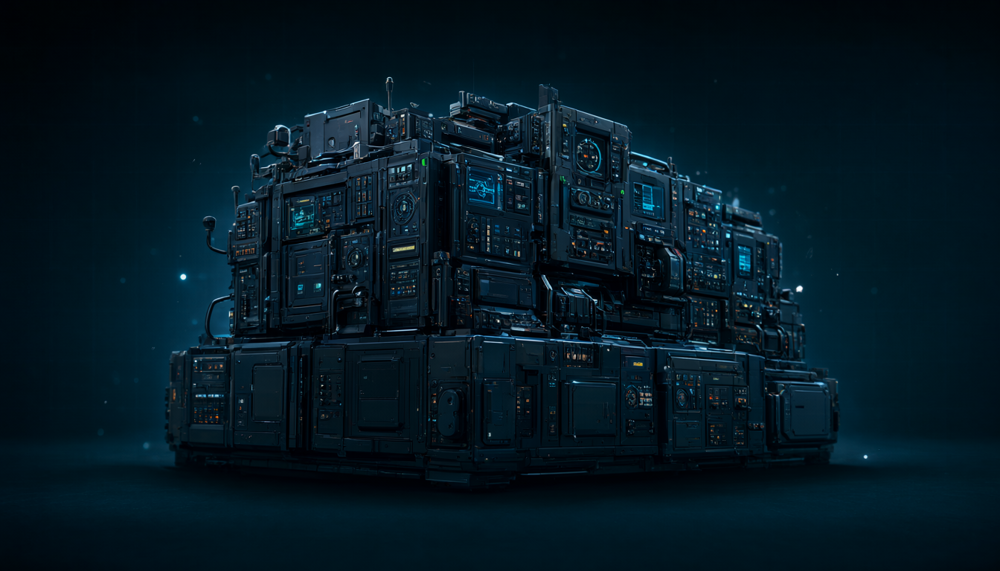

Cline CLI：把六個零件做到生產級
前面三章你手上已經有一個 90 行、能跑的最小版本。現在把鏡頭拉遠，看一個已經上線的開源 harness 把同一組零件做到什麼程度。

同一組零件，兩種規模
Cline 原本以 VS Code 擴充聞名；CLI 2.0 之後，它把同一套 agent runtime 帶進終端機，支援 headless、CI／CD、script 與管線使用。用 Huntley 那套標準看，它大約落在：
一個可直接使用、可自訂、可接本地模型的通用 coding agent harness——能力接近 Claude Code，但設計哲學更偏「開放模型選擇 ＋ 明確審批」。
它已經具備 agent 的核心迴路：
- 讀取專案結構與相關檔案，建立任務 context
- 建立、修改、刪除檔案，並以 diff 呈現變更
- 執行 shell 指令，即時觀察 stdout／stderr
- 根據 linter、compiler、測試輸出除錯並重試
- 透過 MCP 接資料庫、API、瀏覽器、基礎設施等外部工具
- 支援 Plan／Act：先規劃，確認後才執行
所以它不是「會建議程式碼的工具」，而是能自己完成一連串工程動作的 agent。
| # | 零件 | 你的 90 行版本 | Cline CLI |
|---|---|---|---|
| 1 | 模型 | 一個 OpenAI 相容端點 | 幾乎任意：雲端 API、OpenAI-compatible endpoint、Ollama／LM Studio 本地模型 |
| 2 | 工具 | 四個（read_file／grep／edit_file／run_shell） | 檔案增刪改（diff 呈現）、shell、MCP servers、SDK 自訂工具與 lifecycle hooks |
| 3 | 迴圈 | 單層 while，25 步上限 | 完整 agent runtime，另可放進 cron／CI／script，stdin／stdout 可串接 Unix 工具 |
| 4 | Context | 手動截斷工具輸出 | Plan／Act、checkpoint、task 狀態 |
| 5 | 護欄 | 路徑白名單、指令黑名單、步數上限 | 預設逐步審批（可開 auto-approve），diff 可見 |
| 6 | 驗證器 | 你自己指定的測試指令 | 讀 linter／compiler／測試輸出後自行重試 |
看完這張表，最該注意到的不是「它工具比較多」，而是：你的四個工具只是它工具層的一個子集。真正的差距在零件 4 與 5 的成熟度，以及零件 1 可替換的廣度——這三格，才是「能跑」與「能上線」之間的距離。
能力盤點：Cline CLI
| 能力 | Cline CLI 的程度 |
|---|---|
| 單一任務自主完成 | 強：可讀檔、改檔、跑指令、依錯誤修正 |
| 人類控制 | 強：預設可逐步批准檔案修改與指令；也可開 auto-approve |
| 模型自由度 | 很強：支援多家 API、OpenAI-compatible endpoint、Ollama／LM Studio 等本地模型 |
| 工具擴充 | 強：MCP servers、SDK、自訂工具與 lifecycle hooks |
| 自動化整合 | 強：可放進 cron、CI、script，stdin／stdout 可串接 Unix 工具 |
| 多 agent 協作 | 中等偏新：Cline Kanban 可平行跑多個 agent，各自用獨立 git worktree |
| 長任務記憶與 context 管理 | 中等：有 Plan／Act、checkpoint、task 狀態，但複雜長跑任務仍很依賴規格與人工拆解 |
這張表裡最誠實的一格是最後一格。Context 管理是公認最難的零件，連生產級產品都還在做「中等」——你在第 2 章看到的那三個鐵則（截斷輸出、grep 定位、摘要舊輪次），就是這個難題的最小解。
和 Claude Code 的定位差異
| 面向 | Cline CLI | Claude Code |
|---|---|---|
| 定位 | 開源、可自選模型的 agent harness | Anthropic 官方、深度整合 Claude 模型的終端 agent |
| 模型 | 幾乎任意：雲端 API、本地 Ollama／LM Studio | 主要鎖定 Claude 模型 |
| 使用介面 | VS Code／JetBrains／CLI／SDK，IDE 體驗特別強 | 終端機原生體驗 |
| 控制方式 | 預設逐步審批，diff 可見，適合想保留控制權的人 | 也有審批與權限機制，但整體更偏流暢的終端工作流 |
| 多 agent | Kanban 平行任務、git worktree 隔離 | Agent Teams／sub-agents 較成熟 |
| 適合誰 | 想用本地模型、控制成本、重視開放性與可審查性的人 | 想要最少設定、追求 Claude 生態最佳整合的人 |
這張表的目的不是排名。它們在光譜上位置不同：Cline 把選擇權交給你（模型、成本、審批粒度），Claude Code 把整合度做到最高。要選哪一邊，取決於你更在意「可替換」還是「少設定」。
真正的上限：harness 能力 ≠ 實際表現
Cline CLI 的 agent 能力要分兩層看：
- Harness 能力：已經很完整——檔案操作、shell、MCP、Plan／Act、審批、headless 執行。
- 實際表現：主要由你接的模型決定。接 Claude Opus／Sonnet 時可接近 Claude Code；接較小或較弱的本地模型時，規劃、長 context、工具呼叫與除錯能力會明顯下降。
Cline 是很好的 harness，但不保證等於強 agent。它給你 agent 的骨架；模型、rules、MCP 工具、測試與任務拆解，才決定它能走多遠。反過來說——這也正是為什麼前面花了三章講 harness：骨架是你唯一能控制的部分。
「實際表現由你接的模型決定」不是修辭。第 6 章的實測裡，同一個 harness、同一個任務、同一份 AGENTS.md，只換模型：27B 輸出 438 tokens、7.9 秒；8B 輸出 5,378 tokens、65.6 秒——12.3 倍的差距，而且 8B 多繞了一圈才修對。
如果你想親手驗證 Huntley 那句話
以本地模型、開源、可自訂與成本控制為優先，Cline CLI 比 Claude Code 更適合當主要實驗平台：
- 用 Ollama／LM Studio 接本地模型，測試不同模型在同一個 harness 下的表現差異——這是理解「模型是可替換零件」最快的實驗
- 用 MCP 把 PDF／OCR、檔案整理、Git、Python 腳本接進工作流
- 在 CLI 或 CI 中跑重複性任務：批次整理文件、生成測試、檢查專案結構
- 用 Plan／Act 與逐步審批，配合「先理解底層、再逐步放手」的節奏
但要真正理解 harness，建議再往下讀一層：它的 tool-call 格式、system prompt、context 組裝與 auto-approve 邏輯。最有效的練習，是用它的 SDK 寫一個只有「讀檔、寫檔、跑 Python、跑測試」四個工具的迷你版——那其實就是第 3 章那份骨架，只是換成 SDK 的形狀。
Cline CLI 是「開源、模型自由、可審查」的 Claude Code 替代品；作為 agent harness 已達生產可用級，但它的智能上限等於你所選的模型，加上你設計的驗證迴路。
但 Cline 只是光譜的一端。它把六個零件全部做滿，代價是核心很大、你很難一眼看穿它。如果把方向反過來——只留最小的核心，其餘全部交還給使用者——會得到什麼？那是下一章要看的另一個極端：Pi。